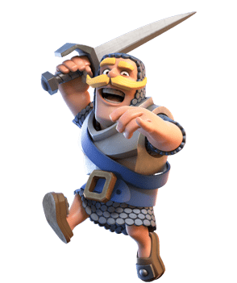
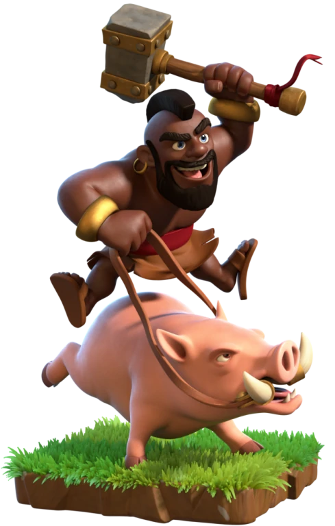

Golem
Es lento, pero persistente, y solo ataca las estructuras. Cuando se destruye, explota y se convierte en dos golemitas que infligen daño en área. Gólem es una carta de rareza épica de Clash Royale que puede obtenerse a partir de la arena 3.

arquero
Dispara una flecha mágica que atraviesa y daña a los enemigos que se interponen en su camino. No es ningún truco, ¡es magia! Arquero mágico es una carta de rareza legendaria de Clash Royale que puede obtenerse a partir de la arena 5.

bruja
es una tropa de base constructora que proviene de Clash Royale, junto con el bombardero y el bebé dragón. Sin embargo, dispara el mismo proyectil que la Bruja, a diferencia de su contraparte cuerpo a cuerpo de Clash Royale, a pesar de blandir un hacha.

caballero
Se puede utilizar como tanque para tropas más pequeñas como los Duendes. Es una gran carta para usar al frente de un mini-ataque. Tiene una gran sinergia en particular con los mazos de carnada de hechizos, y con el Barril de duendes, además es también común en mazos de Bait junto a la Valquiria.

dragon
Aspecto El dragón posee un par de alas y una cola de tamaño mediano. En el nivel 1, es verde con una pequeña corona de cuernos en la parte trasera de la cabeza. En el nivel 2, es morado con las membranas de las alas rosados, y los ojos se vuelven de color lavanda. En el nivel 3, es marrón oscuro con las membranas de las alas color café.

goblin
es una Súper Tropa basada en el Goblin. Se puede desbloquear aumentando el Goblin cuando el Goblin tiene al menos el nivel 7 y cuando el Ayuntamiento se actualiza al nivel 11 o superior.

pillos
Está formada por dos "niñas pillas" y un "niño pillo", el cual tiene la función de defender a sus amigas mientras estas lanzan "chicles" a sus enemigos. Por lo tanto, la función de esta carta es muy sencilla: realizar el daño con las niñas pillas mientras distraemos con el niño pillo.

minero
Es una carta legendaria que puede obtenerse de los cofres una vez alcanzamos la arena 6. Cuesta 3 de elixir, una cifra bastante asequible, y puede desplegarse en cualquier parte de la Arena. Tiene bastantes puntos de vida, 1.000 a nivel 1 y de 1.460 a nivel 5, que no está nada mal.

montaPuercos
es una tropa terrestre rápida con puntos de vida medios, poco daño y la capacidad de saltar sobre los muros enemigos. Se desbloquea en el nivel 2 del Cuartel oscuro.

Pekka
Es una tropa poderosa y puede hacer bastante daño con la colocación y el apoyo correctos. Hace daño masivo a un objetivo a la vez. Sólo a niveles decentes, una P.E.K.K.A puede matar a un Bárbaro de un solo golpe.

principe
Es una tropa muy fuerte, además que tiene una gran velocidad, acompañar esta carta con otras unidades que ataquen con daño en área suele ser un buen combo